Customers+Finance
MGT 100 Week 9
This version: May 2026 | License: CC BY 4.0 | We use javascript to track readership.
We welcome reuse with attribution. Please share widely.
Marketing+Finance
Customer-based corporate valuation
CBCV using credit card expenditure panels
Asset price game
Wrapping up
Hi Finance, I’m Marketing
Finance/marketing crossovers
- Marketing policy effects on stock prices
- ROI estimates & budgets (ads, sales, product launch, …)
- Customer opportunity evaluations & financial forecasts
- M&A analyses, complementarities & market impacts
- Behavioral finance AKA acknowledging that investors are humans and therefore subject to biases
Yet disciplinary cultures differ
Finance professionals are significantly less neurotic and more conscientious than the population at large. Marketing professionals are more extroverted and less agreeable than the population at large. Effect sizes are 1/3-1/2 of a SD
Corporate Valuation
Quantitative current valuation of a business
- True valuation, like wtp, is inherently subjective bc future is unknown
- Yet we often need to assess value without a full sale, eg investment advice, M&A, settling a lawsuit, IPO pricing, approving a business loan
Theoretical best way to measure: sell x% at auction
- But how does valuation change with x?
- Tough experiment to run, but demand usually slopes down
\(CorpVal\): Develops, applies models to value businesses
- Inherently predictive, but ideally closer to appraisal than speculation
- Results may depend on who pays: Buyer, seller, 3rd party
Appraisal-style valuations lead to regular procedures and formulas.
Standard \(CorpVal\) Formulas
\[Shareholder Value_T=OA_T+NOA_T-ND_T\]
- \(T\) indicates current expectation given Today’s data
- \(OA_T\) is net present value of Operating Assets
- \(NOA_T\) is npv of Non-Operating Assets
- \(ND_T\) is net debt
We’re going to zoom in on \(OA_T\) as the only customer-relevant term.
Investment Valuation by Damodaran (2012)
Discounted Cash Flow (DCF) Model
\[ OA_T=\sum_{t=0}^{\infty}\frac{FCF_{T+t}}{(1+WACC_T)^t} \]
- \(WACC\) is the weighted average cost of capital
- \(FCF\) is Free cash flow, or net operating profit after taxes \((NOPAT)\) minus capital expenditures plus depreciation and amortization \((D\&A)\), minus change in nonfinancial working capital \((\Delta NFWC)\):
\[ FCF_t=NOPAT_t-(CAPEX_t-D\&A_t)-\Delta NFWC_t \]
We’re going to zoom in on \(NOPAT_t\) as the only customer-relevant term.
Discounted Cash Flow (DCF) Model
\[ NOPAT_t=[Rev_t*(1-VCR_t)-FC_t]*(1-TR_t) \]
- \(Rev\) is revenue
- \(VCR\) is the variable cost ratio, i.e. total variable cost divided by revenue
- \(FC\) is fixed cost
- \(TR\) is corporate tax rate
We finally get to something that looks like a profit function.
Is this the best way?
\(CorpVal\) uses recent \(NOPAT\) to predict future \(NOPAT\):
\[ NOPAT_T = f(\{NOPAT_{T-t}\}_{t=1,...,T}) \]
Can we do better? Enter CBCV
It is easier to start with subscription businesses, since revenue/customer is roughly constant; we will talk about transaction businesses later.
Core CBCV Idea
Firm strategies have two attributes:
Promotion focus: High customer acquisition, high CAC, high churn
- Expensive, because customer acquisition tends to cost more than customer retention
- Requires a large market to sustain; risk of “pump and dump”
Retention focus: High retention, higher CLV, low CAC
- Offers higher \(OA_T\) but tends toward slower acquisition
CBCV innovation: Use customer data to measure past promotion and churn/retention separately, to better predict future \(NOPAT\)
- Intentionally simplified. A biz could both promote & retain well, or neither
Hence we should assume \(NOPAT_T = f(\{ACQ_{T-t},RET_{T-t}\}_{t=1,...,T})\)
Retention + Churn = 100%. Subscription businesses observe churn directly; transaction businesses must infer churn. What marketing tactics influence promotion? What marketing tactics influence retention? Which would you describe as more controllable or discretionary?
The \(C\) Matrix
- Let \(C(t,t')\) be the number of customers acquired in time \(t\) & still active in time \(t'\ge t\)
- Firm can count customers \(C(t,t')\) for all pairs \((t<T,t'<T)\)
- \(C(t,t)\) is simply customers acquired in period \(t\)
- \(C(t,t')\) is weakly decreasing in \(t'\)
- \(C(.,t)\) is all customers active at time \(t\), roughly proportional to \(NOPAT_t\)
- \(C(.,t)-C(.,t-1)\) is attrition at time \(t\)
- CBCV advocates public reporting of customer acquisition & retention by cohort, as well as profits
- Many startups use \(C\) to manage customer cohorts; called “Triangle Retention Charts”
\(C\) is for customer, but also for Cohort, i.e. the set of unique customers first served during a time period (usually, month or quarter). Customers within a cohort often share some unobserved characteristics.
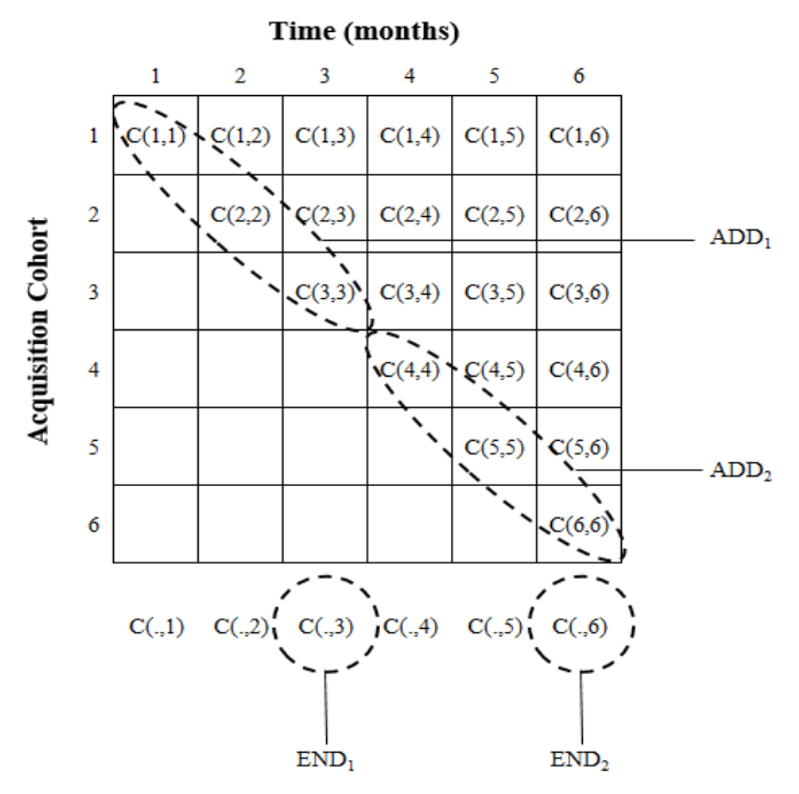
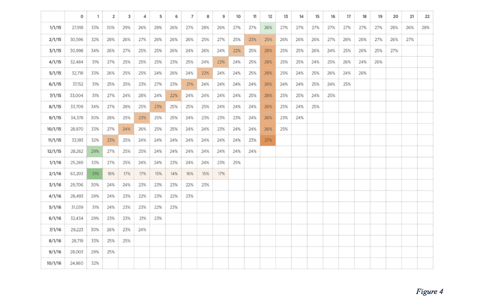
Shapes differ because LHS column labels are absolute calendar-time periods, whereas RHS column labels are relative time periods after acquisition
What about transaction businesses?
The basic CBCV concept extends, but
- Customer attrition not directly observed
- Purchase frequency varies across customers & time
- Spending varies across customers & time
- Customer development varies across customers & time
Greater variance and model uncertainty, hence forecasts are more volatile
Of the four uncertainties listed, which are harder or easier to control for with more data?
Blue Apron
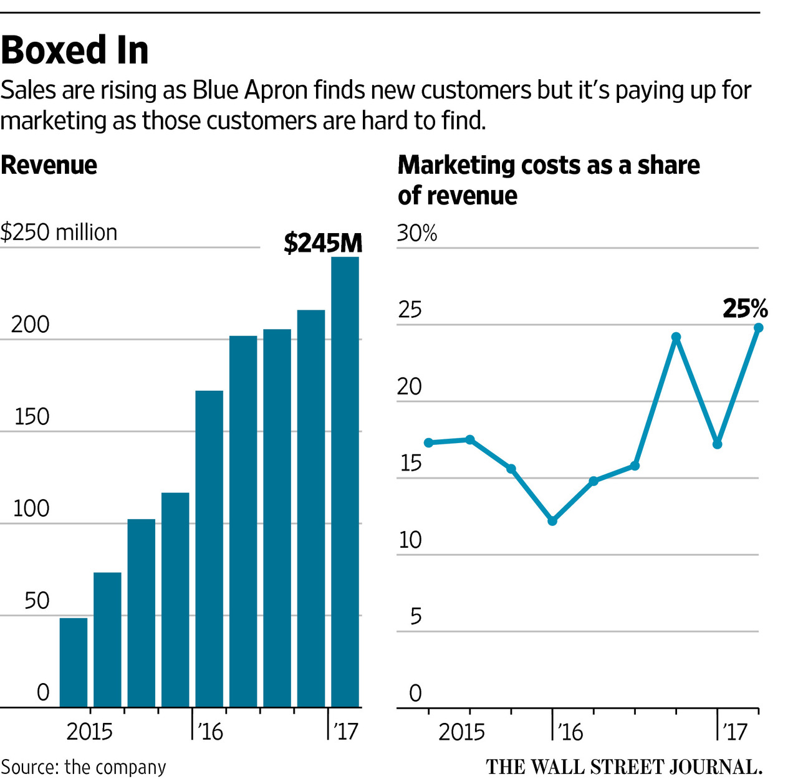
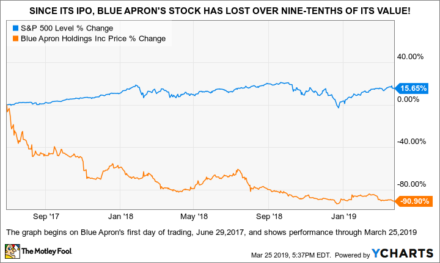
Blue Apron became a famous meal-prep brand by spending a lot. However its customer acquisition budget was astonishingly large. Usually you’re looking at marketing in the 0.2–8% of gross margin range, but Blue Apron’s was around 25% of revenue. The stock did poorly after IPO.
Card spending panels
Data report anonymous cardholder IDs, Merchant Name & Category, Spending, Timestamp, Location
Data are anonymized, but data fusion enables stochastic reidentification
Powerful implications for CBCV:
- You no longer need internal data to estimate \(C\)
- Investors can mine card spending data for customer insights
We can test this using the COVID-19 pandemic, which spiked revenue at many digital-first businesses. Key question: How did pre-pandemic retention trends predict post-pandemic results?
Card spending data became popular in the mid-2010s, but still tend to be expensive.
Gross order value & cohort retention
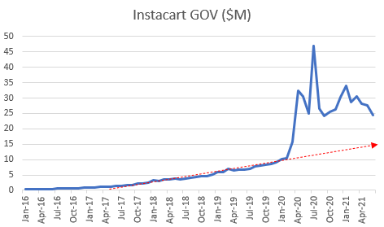
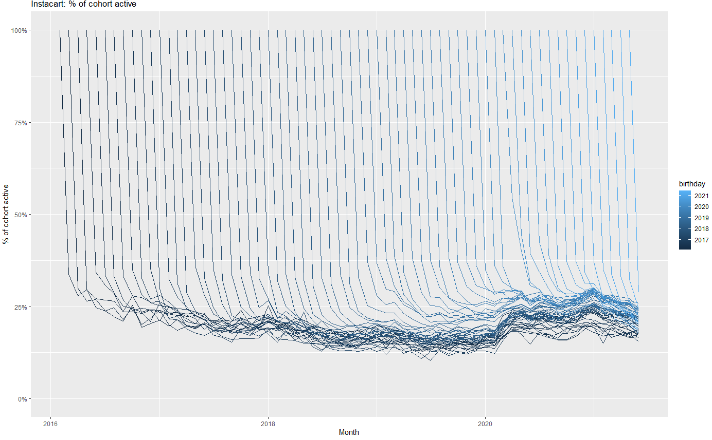
Left figure shows de-seasonalized spending per card. Right figure shows \(C\) for each monthly cohort in each month served, hence is 100% in month 1 by definition. Instacart retention was flat before Covid, then increased and remained high throughout. The business remained healthy for years after.
Gross order value & cohort retention
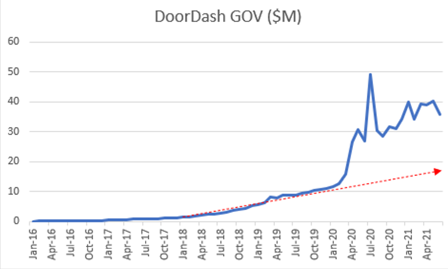
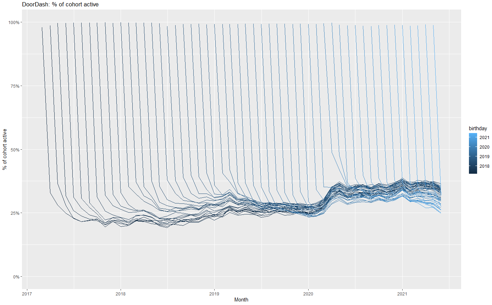
Doordash retentions were increasing before Covid, then increased even more and stayed high. The various customer cohorts show remarkably stable retention rates.
Gross order value & cohort retention
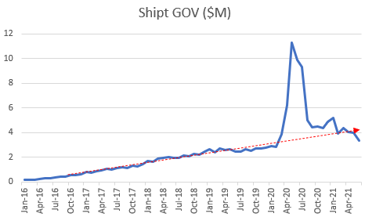
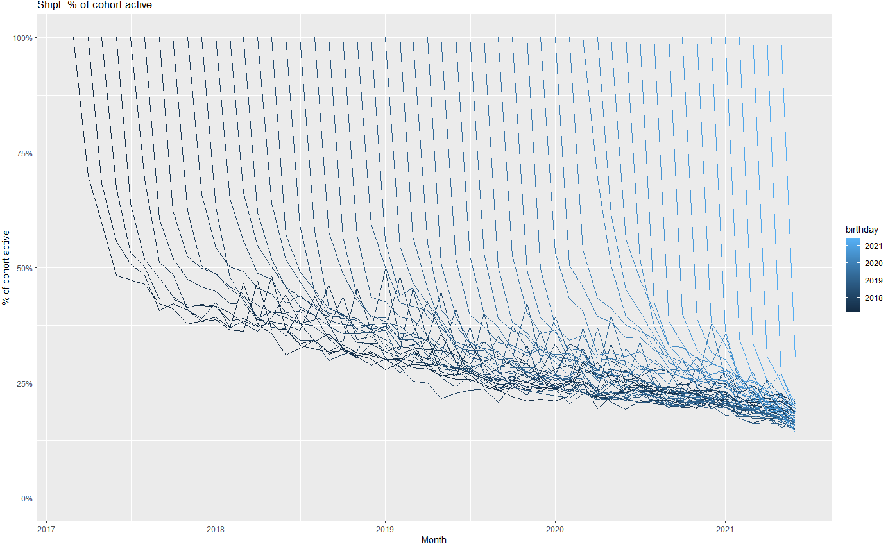
Shipt is an e-commerce delivery service. Cohort retentions had been declining for years before Covid, a deeply troubling sign of dissatisfaction and possible value problems. Shipt eventually sold to Target at a discount.
Customer-data disclosure headwinds
- SEC (2020) asks registrants to disclose the operational/non-financial KPIs management uses to run the business — e.g. ARPU, churn, CAC, cohort metrics
- Morgan Stanley report introduced CBCV to a mainstream sell-side audience
- FASB (2024) invited comment on accounting for customer relationships as intangible assets & asked whether it should pursue uniform measurement and disclosure standards; no decision yet
- Damodaran: Valuing subscription/user businesses requires firms to disclose customer acquisition cost, contribution profitability, and cohort retention tables; cites Atlassian, Dropbox, Slack
- EY (2025) reports that SEC often requests companies to disclose specific results of operations, e.g., new customer revenue, impact of changes in pricing and quantity, changes related to customer acquisitions
Emerging consensus that customer-level reporting should improve corporate valuation accuracy.
How many firms track and report customer analytics?
- Surveyed 300 firms regarding customer analytics measurement & use
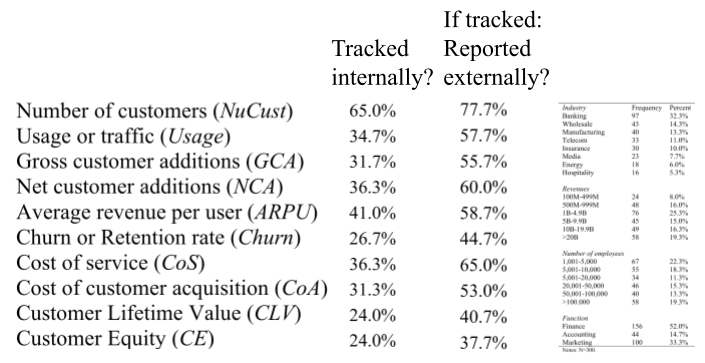
Many customer analytics are tracked and reported, though not systematically, and not by all firms
CBCV rollout
CBCV is slowly entering finance & accounting canon
- Standardized reports would be helpful
Predictions
- Should incentivize start-ups toward customer retention
- Should make capital allocation more efficient
- May require investors to demand \(C\) disclosures, and/or high-retention firms to self-select in
Will we get to a tipping point? The existing systematic reporting regime of balance sheets is deeply entrenched. Wouldn’t more information be better?
Asset Price Game
You are VCs trading start-up shares (“assets”)
Each team starts with 4 assets and $500 million cash
Teams can make money in 1 of 4 ways:
- Collect dividends
- Buy and sell assets
- Hold cash and collect interest
- Asset payouts at the end of the game
Top few winners get 10 contribution points each
Trading rounds
- We will play \(n\) 2-minute rounds. Within each round :
- Enter bids and asks in buy/sell auction
- BID means you offer to trade cash for assets at a given price
- ASK means you offer to sell assets for cash at a given price
- A market-making algorithm will determine the market-clearing price for any distribution of bids and asks at end of round
- All trades will clear at same price within a round
- After trading, each asset pays its owner a risky dividend, and cash accrues interest
After \(n\)th round, every asset pays an extra $14
- Any questions? Veconlab
Let’s play!
How did prices change across rounds?
What strategy did your team use?
How did that work out?
How might this connect to real financial markets?
- Takeaway #1
- Takeaway #2
Wrapping up
Modeling: 1000’ view
Model: Simple representation of complicated phenomena
- We can’t fully understand the phenomena
- We can fully understand the model, but even this can be hard
Modeling is a superpower!
- You can understand, explain and predict things that others can’t
- Modeling skills develop with practice & transfer across domains
Cautions
- Simple models are often 85-95% effective
- There is never a true model: “Model uncertainty” is always present
- All models assume; good models assume transparently
- Anyone can tear down a model; improving a model is work
Congrats you did it!
Special congratulations for those who are graduating
- It’s a big deal. We’re proud of you.
Recap
- Corporate valuation uses past profits to predict future profits, without using granular customer metrics
- Customer-Based Corporate Valuation (CBCV) advocates reporting \(C(t,t')\) to enable investors to better predict profits
- Asset price takeaways #1 & #2
- No customers, no business

Going further
Decomposing Firm Value by Belo et al. (2021) for a competing perspective
What are the most important statistical ideas of the past 50 years?